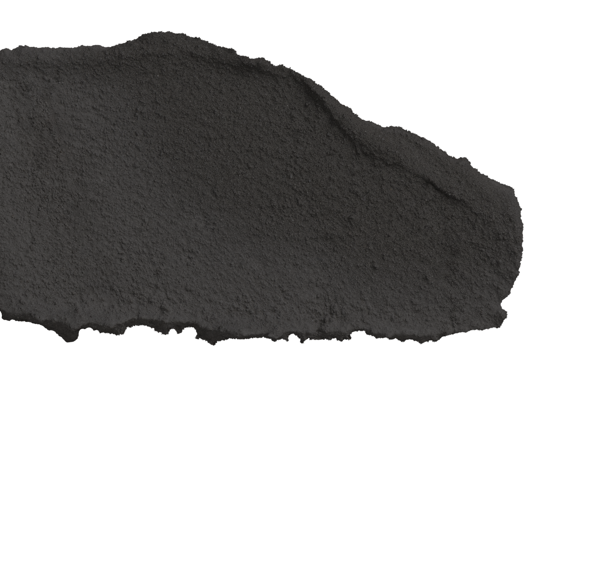
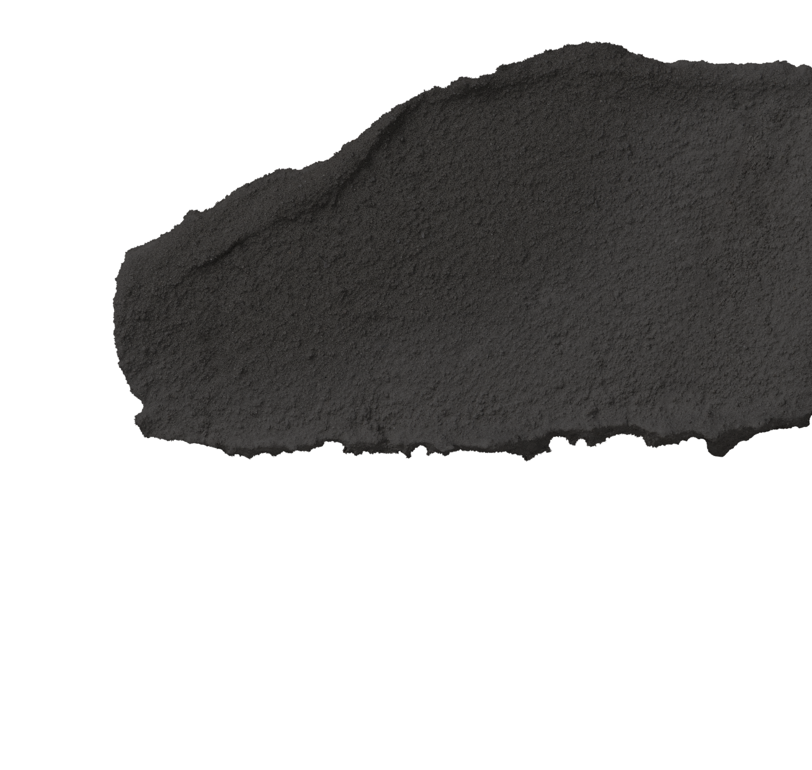
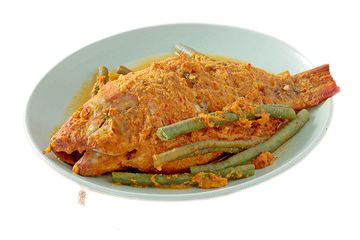

HUBUNGI KAMI
TENTANG KAMI
BLOG
RESEP
Ini dia!
sebuah resep terbaik yang
kalian tunggu-tunggu !
Nasi Gudeg
Sebuah hidangan khas Provinsi Yogyakarta dan Jawa Tengah yang terbuat dari nangka muda.
(More)

Nasi Liwet
Hidangan khas yang dimasak dengan menggunakan santan, kaldu ayam, rempah-rempah, dari Solo.
(More)
Nasi Goreng
Hidangan yang populer dari masakan Asia Timur, Tenggara, dan Selatan pada wilayah tertentu.
(More)

Arsik
Salah Satu masakan khas Tapanuli, Sumatera Utara yang populer. Masakan ini dikenal pula sebagai Ikan Mas bumbu kuning.
(More)

" Anda Senang, Kami Senang"
!!! Selamat Mencoba Resep Dari kami !!!